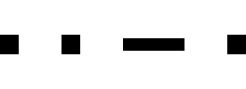

Signalbuch-Online
Signal Zp 12
Informationen, Bedeutung und Ausführung zum Signal Zp 12 (Grenzzeichenfrei).
(1)
Bedeutung
Grenzzeichenfrei.
(2)
Beschreibung
Zwei kurze, ein langer und ein kurzer Ton.

(3)
Anwendung
Das Signal wird, wo seine Anwendung durch den Infrastrukturunternehmer vorgeschrieben ist, für die Zugspitze vom Triebfahrzeugführer mit der Fahrzeugpfeife, für den Zugschluss von dem Zugführer dazu bestimmten Zugbegleiter mit dem Horn gegeben.
Örtliche Zusätze: Die Anwendung ist in örtlichen Zusätzen vorgeschrieben.
(4)
Ausführung & Bedeutung
Das vom Triebfahrzeugführer gegebene Signal bedeutet: „Die Spitze des Zuges steht grenzzeichenfrei“.
Das vom Zugbegleiter gegebene Signal bedeutet: „Der Schluss des Zuges steht grenzzeichenfrei“.